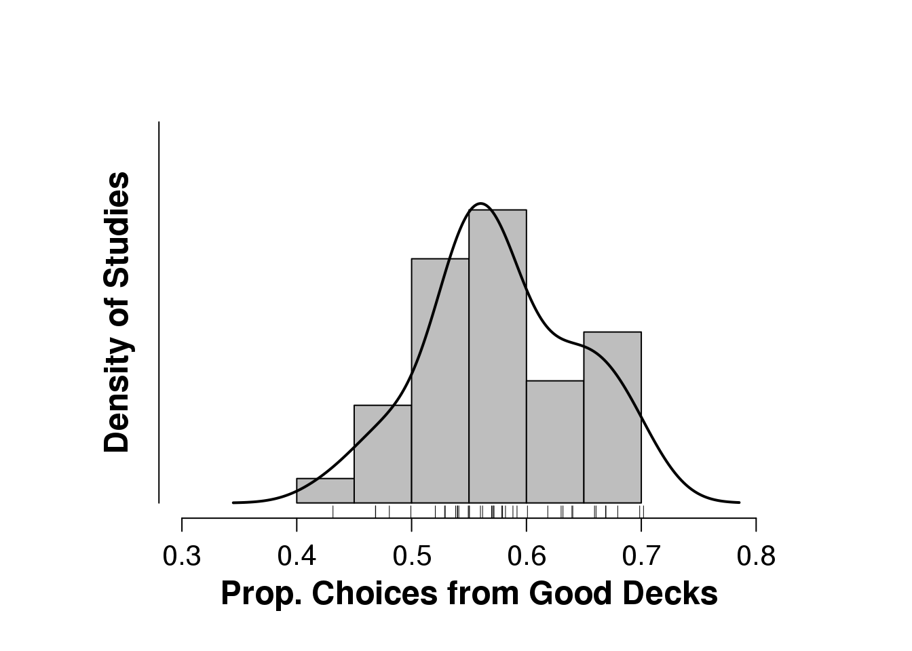

2.3 More plotting
The below examples come from here: http://shinyapps.org/apps/RGraphCompendium/index.php
2.3.1 Correlations
# Presidential data up to and including 2008; data from Stulp et al. 2013
# rm(list=ls())
# height of president divided by height of most successful opponent:
height.ratio <- c(0.924324324, 1.081871345, 1, 0.971098266, 1.029761905,
0.935135135, 0.994252874, 0.908163265, 1.045714286, 1.18404908,
1.115606936, 0.971910112, 0.97752809, 0.978609626, 1,
0.933333333, 1.071428571, 0.944444444, 0.944444444, 1.017142857,
1.011111111, 1.011235955, 1.011235955, 1.089285714, 0.988888889,
1.011111111, 1.032967033, 1.044444444, 1, 1.086705202,
1.011560694, 1.005617978, 1.005617978, 1.005494505, 1.072222222,
1.011111111, 0.983783784, 0.967213115, 1.04519774, 1.027777778,
1.086705202, 1, 1.005347594, 0.983783784, 0.943005181, 1.057142857)
# proportion popular vote for president vs most successful opponent
# NB can be lower than .5 because popolar vote does not decide election
pop.vote <- c(0.427780852, 0.56148981, 0.597141922, 0.581254292, 0.530344067,
0.507425996, 0.526679292, 0.536690951, 0.577825976, 0.573225387,
0.550410082, 0.559380032, 0.484823958, 0.500466176, 0.502934212,
0.49569636, 0.516904414, 0.522050547, 0.531494442, 0.60014892,
0.545079801, 0.604274986, 0.51635906, 0.63850958, 0.652184407,
0.587920412, 0.5914898, 0.624614752, 0.550040193, 0.537771958,
0.523673642, 0.554517134, 0.577511576, 0.500856251, 0.613444534,
0.504063153, 0.617883695, 0.51049949, 0.553073235, 0.59166415,
0.538982024, 0.53455133, 0.547304058, 0.497350649, 0.512424242,
0.536914796)
# cor.test(height.ratio,pop.vote)
library(plotrix) # package plotrix is needed for function "ablineclip""
# if the following line and the line containing "dev.off()" are executed, the plot will be saved as a png file in the current working directory
# png("Presidental.png", width = 18, height = 18, units = "cm", res = 800, pointsize = 10)
op <- par(cex.main = 1.5, mar = c(5, 6, 4, 5) + 0.1, mgp = c(3.5, 1, 0), cex.lab = 1.5 , font.lab = 2, cex.axis = 1.3, bty = "n", las = 1)
plot(height.ratio, pop.vote, col = "black", pch = 21, bg = "grey", cex = 2,
xlim = c(.90,1.20), ylim = c(.40,.70), ylab = "", xlab = "", axes = FALSE)
axis(1)
axis(2)
reg1 <- lm(pop.vote ~ height.ratio)
ablineclip(reg1, lwd = 2,x1 = .9, x2 = 1.2)
par(las = 0)
mtext("Presidential Height Ratio", side = 1, line = 2.5, cex = 1.5)
mtext("Relative Support for President", side = 2, line = 3.7, cex = 1.5)
text(1.15, .65, "r = .39", cex = 1.5)
# dev.off()
# For comparison, consider the default plot:
par(op) # reset to default "par" settings
plot(height.ratio, pop.vote) #yuk!2.3.2 Including a Density Estimator
# rm(list = ls())
# Data: Proportion of choices from the good decks as reported in 39 studies
good.choices <- c(.43, .47, .47, .48, .50, .52, .53, .53, .54, .54, .54, .54, .55, .55, .55, .56, .56, .57, .57, .57, .57, .58, .58, .58, .59, .59, .60, .62, .63, .63, .64, .64, .66, .66, .67, .67, .68, .70, .70)
yhigh <- 8
par(cex.main = 1.5, mar = c(5, 6, 4, 5) + 0.1, mgp = c(3.5, 1, 0), cex.lab = 1.5 , font.lab = 2, cex.axis = 1.3, bty = "n", las = 1)
h <- hist(good.choices, freq = FALSE, main = "", xlab = "", ylab = " ", ylim = c(0, yhigh), xlim = c(.30, .80), axes = FALSE, col = "grey")
axis(1, seq(.30, .80, by = .1))
axis(2, labels = FALSE, lwd.ticks = 0)
rug(jitter(good.choices))
mtext("Prop. Choices from Good Decks", side = 1, line = 2.5, cex = 1.5, font = 2)
mtext("Density of Studies", side = 2, line = 1, cex = 1.5, font = 2, las = 0)
lines(density(good.choices), lwd = 2)
2.3.3 Network graph
library("psych")
library("qgraph")# Load BFI data:
data(bfi)
bfi <- bfi[, 1:25]
# Groups and names object (not needed really, but make the plots easier to
# interpret):
Names <- scan("http://sachaepskamp.com/files/BFIitems.txt", what = "character", sep = "\n")
# Create groups object:
Groups <- rep(c("A", "C", "E", "N", "O"), each = 5)
# Compute correlations:
cor_bfi <- cor_auto(bfi)
# Plot correlation network:
graph_cor <- qgraph(cor_bfi, layout = "spring", nodeNames = Names, groups = Groups, legend.cex = 0.6,
DoNotPlot = TRUE)
# Plot partial correlation network:
graph_pcor <- qgraph(cor_bfi, graph = "concentration", layout = "spring", nodeNames = Names,
groups = Groups, legend.cex = 0.6, DoNotPlot = TRUE)
# Plot glasso network:
graph_glas <- qgraph(cor_bfi, graph = "glasso", sampleSize = nrow(bfi), layout = "spring",
nodeNames = Names, legend.cex = 0.6, groups = Groups, legend.cex = 0.7, GLratio = 2)